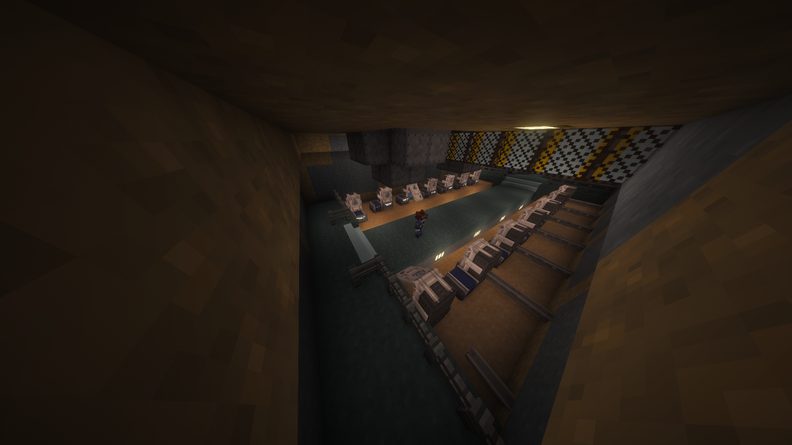

AFTER THE NUKES
[ SISTEMA OPERACIONAL DA VAULT-TEC v1.20.1 ]
[!] ALERTAS DE SEGURANÇA
- SERVIDOR REINICIA DIARIAMENTE ÀS 00:00 AM & 12:00 PM.
- MANTENHA O MOD 'PACKET FIXER' INSTALADO PARA EVITAR QUEDAS.
> INTRODUÇÃO
O MUNDO COMO CONHECÍAMOS FOI REDUZIDO A CINZAS. AFTER THE NUKES É O PROTOCOLO FINAL DE SOBREVIVÊNCIA. RECURSOS ESCASSOS, AMBIENTE TÓXICO E DESAFIOS CONSTANTES. BEM-VINDO À WASTELAND.
[ ADVERTÊNCIA CRÍTICA ]
KEEPINVENTORY: DESATIVADO
MORTE RESULTA EM PERDA TOTAL DE ITENS NO LOCAL. REUPERE SEU CORPO PARA RETOMAR SEUS PERTENCES.
KEEPINVENTORY: DESATIVADO
MORTE RESULTA EM PERDA TOTAL DE ITENS NO LOCAL. REUPERE SEU CORPO PARA RETOMAR SEUS PERTENCES.
> ESPECIFICAÇÕES DO SISTEMA
VERSÃO MC:
1.20.1
1.20.1
ENGINE:
Forge 47.2.0
Forge 47.2.0
RAM:
4GB - 6GB
4GB - 6GB
TIPO:
HARDCORE SURVIVAL
HARDCORE SURVIVAL
> PROTOCOLO DE INSERÇÃO (SPAWN)
A JORNADA COMEÇA NA ENTRADA PRINCIPAL DA VAULT. SIGA PARA AS COORDENADAS:
X: -16 | Y: 89 | Z: -322
 [ VISTA EXTERIOR ]
[ VISTA EXTERIOR ]

[ VISTA INTERIOR ]> MÓDULOS DE DOWNLOAD DISPONÍVEIS
> LOG DE ATUALIZAÇÕES (CHANGELOG)
VERSÃO 1.5.0 [ATUAL]
- Implementação do 'MODO CINEMÁTICO' com suporte a Shaders avançados.
- Ajustes de iluminação global para maior imersão pós-apocalíptica.
- Exclusão de arquivos desnecessários nos arquivos Zip.
- Versão 'MODO PERFORMANCE' criada.
- Adicionado mod 'Packet Fixer' para resolver erros de Payload.
- Otimização de memória RAM com 'FerriteCore' e 'ModernFix'.
- Novas construções destruídas adicionadas ao mapa 'saves'.
- Correção de crash ao abrir o menu 'Fancy Menu'.
- Ajuste no tempo de timeout para 600 segundos (Connectivity).
- Inclusão do IP automático no arquivo servers.dat.
- Lançamento inicial do protocolo After the Nukes.
> INSTRUÇÕES DE INSTALAÇÃO
- Instale o Forge 1.20.1 (Versão 47.2.0 ou superior).
- Baixe o módulo desejado (Performance ou Cinema).
- Mova as pastas 'mods' e 'config' para sua .minecraft.
- Certifique-se de alocar pelo menos 6GB de RAM no launcher.